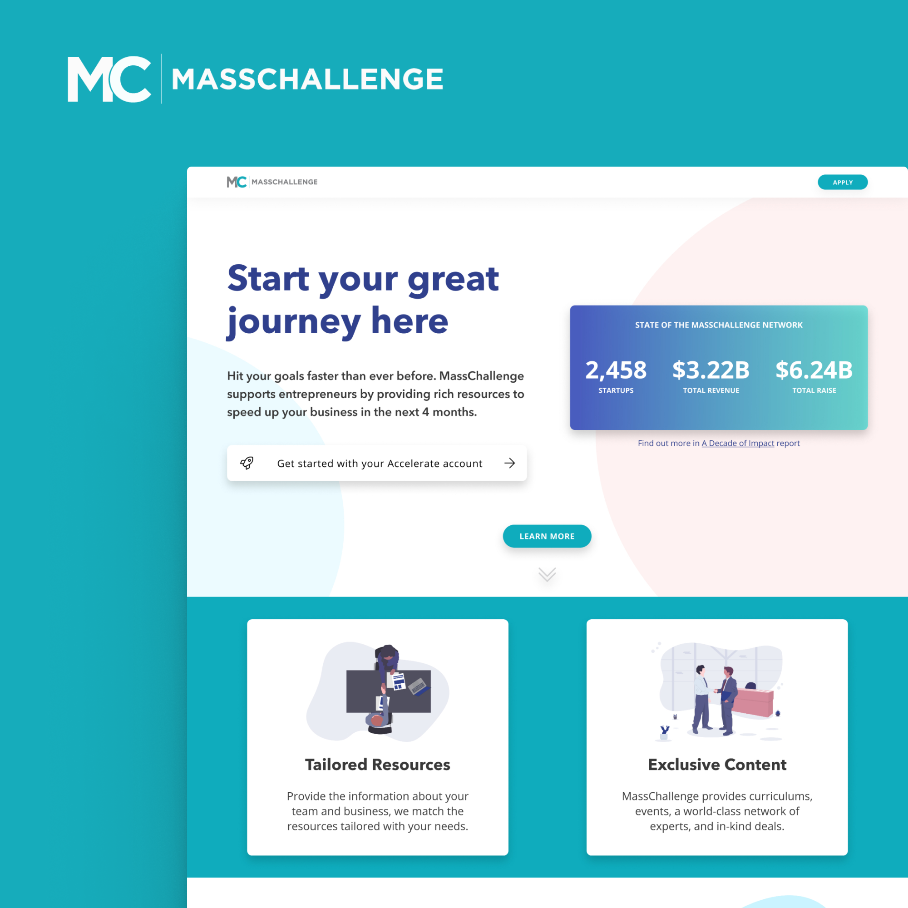
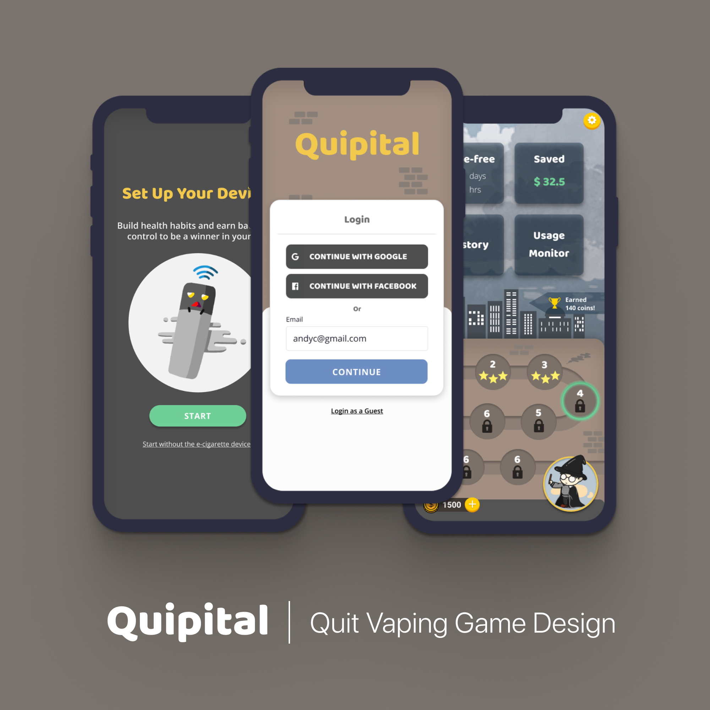

UX Design
End-to-End Design, User Journey Map, Interaction Design, User Flow, Visual Design, Design System
UX Research
Usability Testing, A/B testing, Affinity Diagram, Comparative Analysis, Survey Design, Heuristic Evaluation
Prototyping & Code
High-fidelity prototypes in Figma, interactive prototypes in React/HTML/CSS, data exploration in Python & SQL
Work

Product Design · UX Research · Internship
Redesigned the post-program resource experience for 2,344+ startup alumni to increase network engagement — turning a passive directory into a curated, goal-driven platform.

Product Design · UX Strategy · Senior Designer
Reframed a visual refresh into an architectural content challenge — redesigning a high-traffic attorney review discovery page to reverse organic traffic decline and 2× CTR.

Quipital — Mobile Health Game for Vaping Cessation
Game Design · Behavioral Science · ACM CHI 2020
Designed a behavior-change mobile game to help young adults quit vaping — applying gamification and behavioral science theory. Presented at ACM CHI 2020.
Case study in progress
About Me
I’m a UX Designer from Taiwan, based in Los Angeles. I hold a Master of Health Informatics from the University of Michigan, where I focused on consumer health technologies and behavioral research.
I care about the gap between what users say and what they actually do. That instinct shapes how I run research, where I push back on assumptions, and how I frame design decisions for stakeholders.
I’ve worked across health tech, enterprise SaaS, and startup accelerators — collaborating with PMs, engineers, and researchers to move products from ambiguous problems to shipped solutions.
- 🌱 Currently learning: Korean 🇰🇷, Music Production 🎹